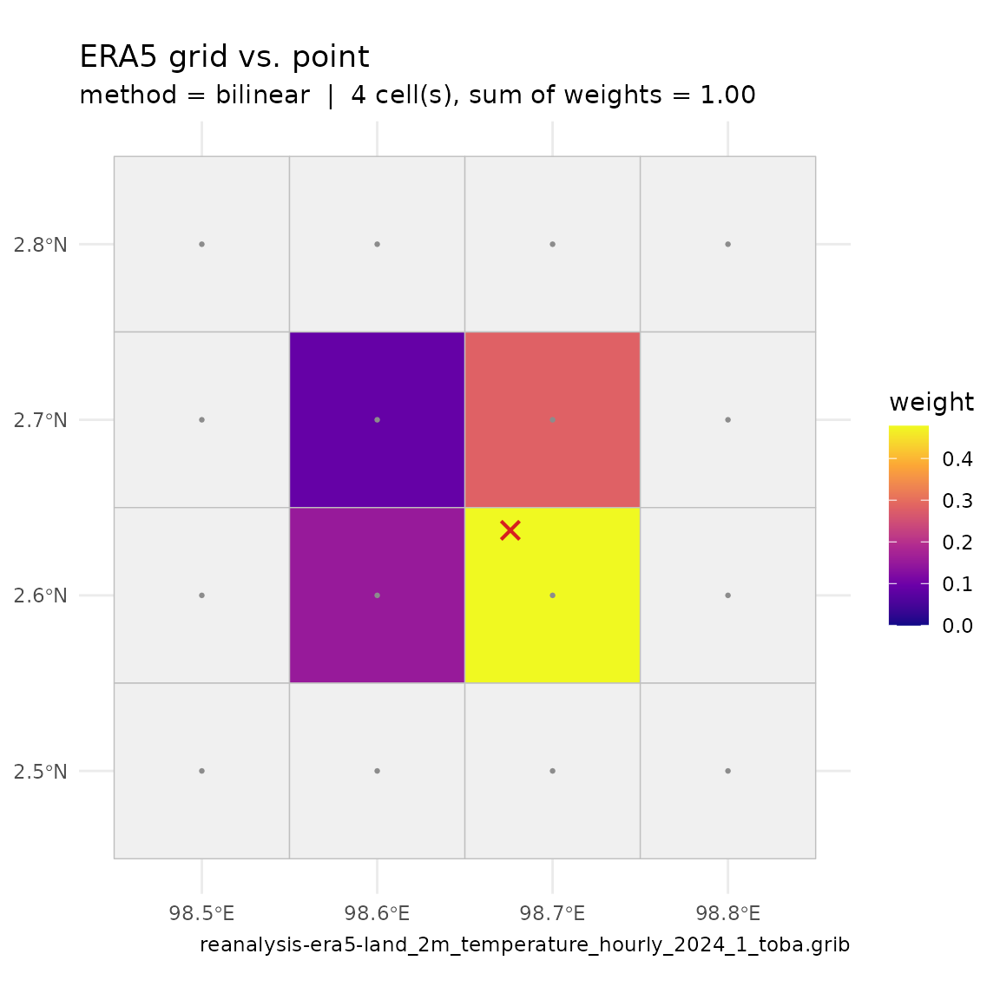

metscale’s bias-correction and disaggregation tools
operate on a meteorology data frame. This vignette covers the three ways
to acquire ERA5 forcing, from lightest to heaviest. Whichever
you use, the output feeds into standardise_met(),
fit_met_bias_correction() and
disaggregate_met_to_hourly().
All three functions need suggested packages that are
not installed with metscale by
default:
install.packages(c("httr2", "jsonlite", "terra", "ecmwfr", "stars", "sf"))1. Point time series from ISIMIP3a —
download_era5_isimip_point()
The quickest route. download_era5_isimip_point() pulls
daily ERA5 (20CRv3-ERA5, ISIMIP3a obsclim) from the ISIMIP repository API for any
point on the globe. No account or key is required. Coverage currently
runs to 2021.
lon <- 98.67591 # Lake Toba, Indonesia
lat <- 2.637047
years <- 2015:2021
vars <- c("MET_tmpair", "MET_pprain")
met <- download_era5_isimip_point(lon, lat, years, vars)
#> ℹ Submitting job to ISIMIP server (4 files requested)
#> ✔ Job submitted in 2s | id=214bee8ef101706884cbc5691bc7f4b5fdac17d7 | status=finished
#> ✔ Server finished preparing 4 files in 0s
#> ℹ Downloading isimip-download-214bee8ef101706884cbc5691bc7f4b5fdac17d7.zip
#> ✔ Downloaded 0.6 MB in 2s (0.3 MB/s)
#> ℹ Extracting archive to /tmp/RtmpaMW7r8/isimip-download-214bee8ef101706884cbc5691bc7f4b5fdac17d7
#> ✔ Extracted 4 files in 0s
#> ℹ Reading 2 variables from NetCDF files
#> ℹ tas: 2 files, 4018 records (0s)
#> ℹ pr: 2 files, 4018 records (0s)
#> ✔ Read all variables in 1s
#> ✔ Done: 4018 daily records for 2 variables (total 5s)
summary(met)
#> Date MET_tmpair MET_pprain
#> Min. :2011-01-01 Min. :19.02 Min. : 0.000
#> 1st Qu.:2013-10-01 1st Qu.:21.36 1st Qu.: 2.328
#> Median :2016-07-01 Median :21.84 Median : 5.551
#> Mean :2016-07-01 Mean :21.86 Mean : 7.417
#> 3rd Qu.:2019-04-01 3rd Qu.:22.35 3rd Qu.:10.339
#> Max. :2021-12-31 Max. :24.30 Max. :76.598Variable names may be given either as AEME MET_* names
or as the ERA5/CMIP short names (tas, pr,
sfcwind, rsds, ps,
rlds, hurs). The result has a
Date column plus one column per variable, already in AEME
names and units (degC, mm/day, …).
2. Gridded GRIB from the Copernicus Data Store —
download_era5_cds()
For the full hourly ERA5 / ERA5-Land archive you need a free ECMWF account or a free Copernicus Data
Store (CDS) account, linked to your session with
ecmwfr::wf_set_key(). See the ecmwfr
documentation.
ecmwfr::wf_set_key(key = Sys.getenv("ECMWF_KEY"),
user = Sys.getenv("ECMWF_USER"))download_era5_cds() submits one CDS request per variable
/ year / month (batched, up to 20 at a time) and writes a GRIB file per
request. Give it a point plus buffer, or an sf
polygon as shape.
File downloads can be slow, so this vignette uses a pre-downloaded
GRIB for demonstration. The extdata directory contains a
single GRIB for Lake Toba, Indonesia (2m temperature, January 2024).
year <- 2024
month <- 1
files <- download_era5_cds(
lat = lat, lon = lon, year = year, month = month,
variable = "2m_temperature", path = "data/test", site = "toba",
user = Sys.getenv("ECMWF_USER")
)
files
#> [1] "/home/runner/work/_temp/Library/metscale/extdata/era5/reanalysis-era5-land_2m_temperature_hourly_2024_1_toba.grib"Plot the downloaded GRIB with plot_era5_grib():
Plot the point location on the downloaded grid with
plot_extract_grid():
path <- dirname(files)
plot_extract_grid(path = path, lon = lon, lat = lat, method = "bilinear")
Extract a point (or polygon-mean) time series from the downloaded
GRIB with read_era5_grib_point():
df <- read_era5_grib_point(file = files, lat = lat, lon = lon)
head(df)
#> DateTime value units variable short_name
#> 1 2024-01-01 00:00:00 292.0308 C 2T_0-SFC 2T
#> 2 2024-01-01 01:00:00 292.5305 C 2T_0-SFC_2_1 2T
#> 3 2024-01-01 02:00:00 293.2504 C 2T_0-SFC_2_2 2T
#> 4 2024-01-01 03:00:00 294.5083 C 2T_0-SFC_2_3 2T
#> 5 2024-01-01 04:00:00 295.8975 C 2T_0-SFC_2_4 2T
#> 6 2024-01-01 05:00:00 297.0063 C 2T_0-SFC_2_5 2TFor a model-ready hourly frame (de-accumulated fluxes, standard
units, a time-zone shift) point extract_era5_hourly_met()
at the download directory instead. It picks the reader from each file’s
extension, so the GRIB written above is read directly; the default
pattern ("{variable}") already matches
download_era5_cds() names, so nothing else is needed:
met <- extract_era5_hourly_met(
path = path, lon = lon, lat = lat, years = year, variables = "2m_temperature"
)
#> 2m_temperature: 1 file(s), 4 grid cell(s)3. Aggregate downloaded ERA5 to daily —
convert_era5_netcdf()
For a daily frame,
convert_era5_netcdf() wraps the step above: it runs
extract_era5_hourly_met() over the files in
path (netCDF or GRIB — the same file discovery, spatial
sampling, de-accumulation, unit conversion and time-zone shift) and then
aggregates to daily with met_to_daily() (rain and snow
summed, everything else averaged). Extra ... arguments are
forwarded to extract_era5_hourly_met().
met <- convert_era5_netcdf(
path = path, lon = lon, lat = lat, years = year,
variables = "2m_temperature", site = "toba", format = "AEME"
)
#> 2m_temperature: 1 file(s), 4 grid cell(s)Unless minmax = FALSE, daily minimum and maximum air and
dewpoint temperature are added (MET_airmin /
MET_airmax / MET_dewmin /
MET_dewmax).
convert_era5_netcdf(format = "raw") returns the ERA5
short names (t2m, d2m, ssrd,
strd, …) with a datetime column, which
standardise_met() recognises directly:
met_raw <- convert_era5_netcdf(path = path, lon = lon, lat = lat, years = year,
variables = "2m_temperature", format = "raw")
#> 2m_temperature: 1 file(s), 4 grid cell(s)
std <- standardise_met(met_raw)
#> date column: datetime -> Date
#> Warning in standardise_met(met_raw): 2 column(s) could not be matched and are
#> left unchanged: t2m_min, t2m_max
#> renamed: t2m -> MET_tmpair
#> Warning in standardise_met(met_raw): required variable(s) absent after
#> renaming: MET_radswd, MET_wndspd, MET_pprainNext steps
-
standardise_met()— column names, units, time zone, resampling. -
fit_met_bias_correction()/apply_met_bias_correction()— correct ERA5 against local observations. -
disaggregate_met_to_hourly()— daily back to sub-daily. -
expand_met()— derive the remaining variables a lake model needs.